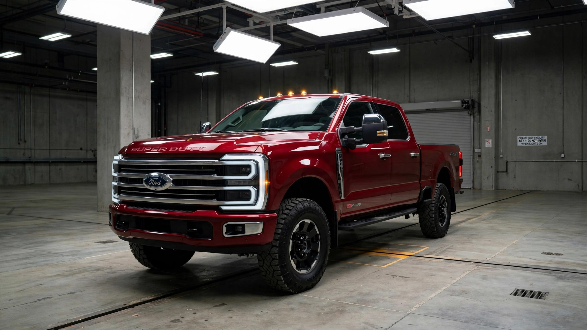

6,754 Fatal Crashes. Zero Required Crash Tests.

The Ford F-250 Super Duty has been involved in 6,754 fatal crashes in the FARS database over the past decade. That puts it ahead of the Explorer, the Tahoe, the Malibu. Ahead of every Nissan and every Hyundai. Only four vehicles in the entire dataset have more fatally-crashed drivers.
Federal law does not require a single crash test for it.
At 10,000 pounds GVWR, the F-250 clears the 8,500-pound threshold that separates passenger vehicles from the regulatory wilderness. Above that line, FMVSS 208's advanced airbag requirements evaporate. FMVSS 214's side-impact standards vanish. FMVSS 226's ejection mitigation rules disappear. Mandatory AEB that takes effect in 2029 for passenger cars? Doesn't apply. It's Class 3. Regulations were written for Class 1 and 2. Nobody rewrote them.
When Ford submitted the 2017 F-250 Crew Cab for NHTSA's New Car Assessment Program, it earned five stars. Ford issued a press release. But that submission was voluntary. No manufacturer is required to put a heavy-duty pickup through NCAP. Most don't. Ram's 2500 squeaked through with four stars when it was tested. Silverado HD? Never submitted.
In June 2026, the IIHS finally started testing this class of vehicle for the first time in its history.[1] The initial evaluation was deliberately basic: Do the trucks have airbags? Seatbelt pre-tensioners? Force limiters? Seatbelt reminders? Features that have been standard in a Honda Civic since the Clinton administration. Of nine HD pickups and cargo vans tested, only four met every criterion.[2]
FARS toxicology data makes the F-250's body count harder to dismiss as a behavior problem. Only 20.3% of its fatally-crashed drivers were impaired. That means nearly 80% were sober. Working. Towing a trailer down a county road. Hauling materials to a job site. Dying in a vehicle that the federal government has never required to prove it can protect them in a crash.
IIHS justified its new testing program with a single statistic: crashes involving medium and heavy-duty trucks killed 6,535 people in 2023, approximately 16% of all U.S. traffic deaths.[3] NHTSA's 2025 subcategory data shows large-truck-involved fatalities fell 7% last year, but that improvement tracks enforcement and driver behavior, not structural occupant protection that was never mandated in the first place.
FARS data puts the F-250's kill rate at 0.43 deaths per 100 million vehicle miles traveled. Its heavier sibling, the F-350, manages 0.15. The difference likely reflects fleet composition: F-350s live on commercial lots with CDL drivers and fleet safety programs. F-250s split between job sites and suburban driveways. Consumer buyers purchase them with consumer expectations about safety. They get commercial-grade regulatory oversight, which is to say, almost none.
Here is the actionable version: if you drive an F-250, check whether your truck has front-seat side airbags and a seatbelt pre-tensioner. These are not federally required for your vehicle class. Ford has made them standard on recent Super Duty models, but older trucks may lack them entirely. You can verify your specific VIN's safety equipment through Ford's owner portal or your dealer. If you are shopping for a heavy-duty pickup, ask the dealer which crash tests the vehicle has undergone. If the answer is "none," you know exactly how much the federal government has verified about the thing protecting your life at 70 mph.
Sources & References
- IIHS, “Big Trucks Like the Ford Super Duty and Ram HD Eluded Safety Evaluations, Until Now,” June 2026. thedrive.com
- Autoblog, “America’s Biggest Pickups Just Got Their First IIHS Safety Check, And Some Failed,” June 17, 2026. autoblog.com
- NHTSA, Fatality Analysis Reporting System (FARS), 2014–2023. nhtsa.gov
- NHTSA, Early Estimates of Motor Vehicle Traffic Fatalities and Fatality Rate by Sub-Categories in 2025, DOT HS 813 829, July 2026. crashstats.nhtsa.dot.gov
- Equipment World, “2017 Ford F-250 Only HD Pickup to Earn Five Star NHTSA Safety Rating,” January 2017. equipmentworld.com